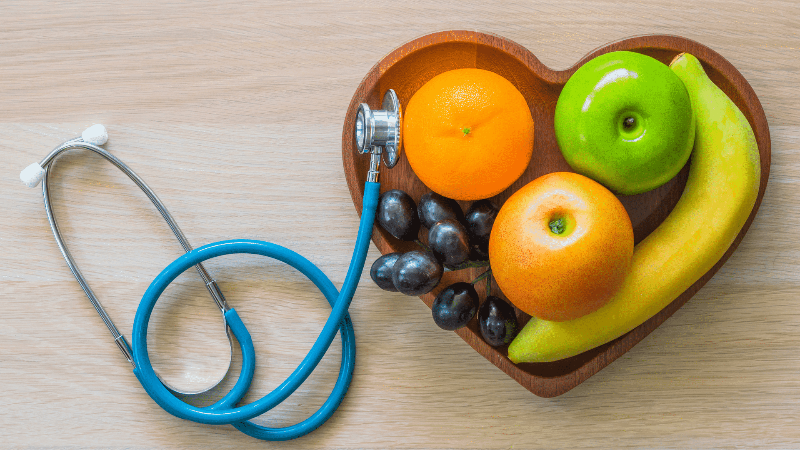

Nutrição
O QUE É NUTRIÇÃO?
Nutrição é a ciência que estuda os processos pelos quais o organismo obtém e utiliza os nutrientes dos alimentos. Uma boa nutrição é essencial para manter a saúde, prevenir doenças e promover o bem-estar geral. Ela envolve a compreensão das necessidades do corpo em termos de nutrientes e como esses nutrientes influenciam nossa saúde e funcionamento.
NUTRIENTES ESSENCIAIS
CARBOIDRATOS
Os carboidratos são a principal fonte de energia para o corpo. Eles são encontrados em alimentos como grãos, frutas, vegetais e leguminosas. Preferir carboidratos complexos, como grãos integrais e vegetais, pode ajudar a manter níveis de energia estáveis e melhorar a saúde digestiva.
PROTEINAS
As proteínas são essenciais para a construção e reparação dos tecidos, além de desempenharem um papel crucial no sistema imunológico. Fontes de proteínas incluem carnes magras, peixes, ovos, laticínios, legumes e nozes. É importante incluir uma variedade de fontes de proteínas em sua dieta para garantir a ingestão adequada de aminoácidos essenciais.
GORDURAS
As gorduras são importantes para a absorção de vitaminas lipossolúveis (A, D, E e K), produção de hormônios e saúde celular. Optar por gorduras saudáveis, como as encontradas em abacates, nozes e azeite de oliva, em vez de gorduras saturadas e trans, pode ajudar a manter o coração saudável.
VITAMINAS E MINERAIS
Vitaminas e minerais são micronutrientes que o corpo precisa em pequenas quantidades para funções vitais. Eles ajudam na imunidade, produção de energia e formação de ossos e dentes. Uma dieta rica em frutas, vegetais, grãos integrais e proteínas magras pode ajudar a garantir que você obtenha uma variedade adequada de vitaminas e minerais.
AGUA
A água é essencial para quase todos os processos do corpo, incluindo a digestão, absorção de nutrientes e regulação da temperatura. Manter-se bem hidratado é crucial para a saúde geral. Recomenda-se beber pelo menos 8 copos de água por dia, ajustando a quantidade conforme o nível de atividade física e as condições ambientais.